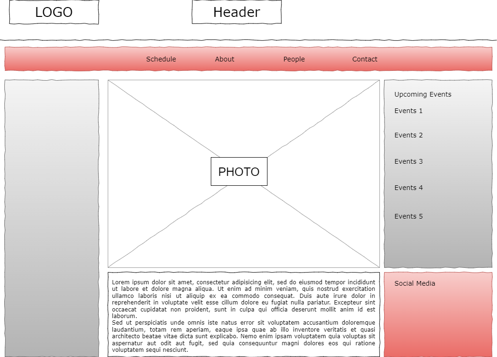
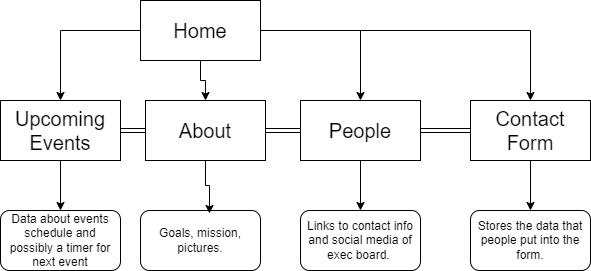

Client Project Overview
Project Overview
- This website is focused on improving engagement for a new club at UNC Charlotte, the Poker Club.
- It's intended users are mainly students and possibly faculty and staff of UNC Charlotte.
- Content: An about section explaining the goals and mission of the club. A people section introducing the executive cabinet. A contact/interest form. Upcoming events/schedule.
Client Information
- Name: James Hobson
- Affiliation: UNC Charlotte Poker Club
- Email: jhobson9@uncc.edu
Wireframe
Sitemap
Page Design
- Home: The page will welcome the user and have a general overview of the club.
- Schedule: Will have upcoming events and will have timer for next important event. Will contain hyperlinks.
- About: Presents the mission statement, goals of th club, and what to expect.
- People: Lists the exec members and a description of them. Hyperlinks to social media.
- Interest Form: Lets users enter contact information so that the club can contact them. Will need to validate form.
Dynamic Functionality
Will have a form that will allow prospective members to leave their information so that the recruiting officer can contact them. This will be on the Interest Form page. I also plan to put a countdown timer until the next big upcoming events on the upcoming events page.
Example of Form
Example of Timer